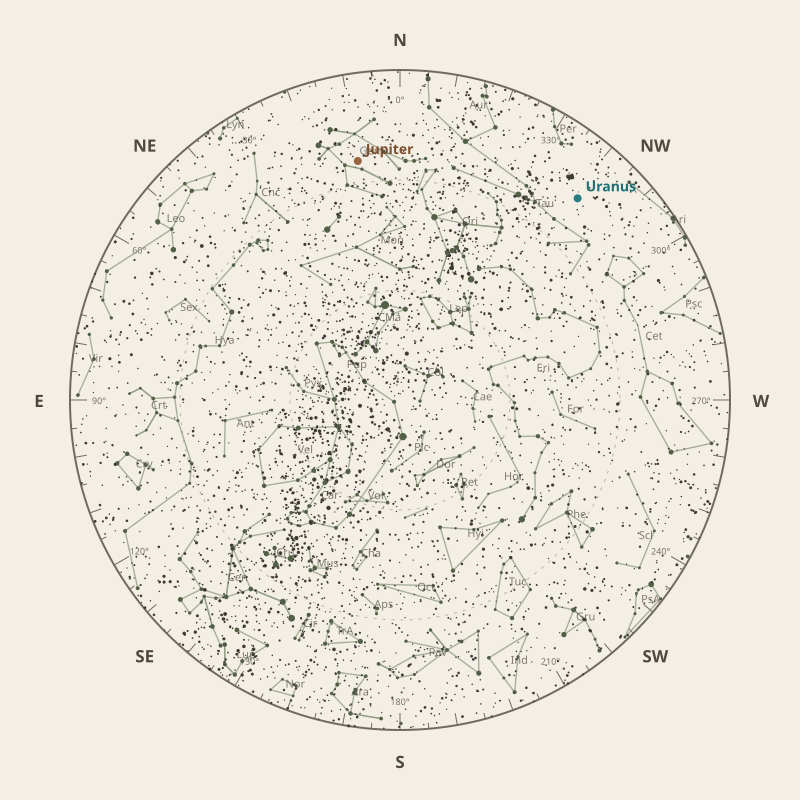

← Annual almanac


North is at the top; east is at the left. Solar System objects shown are above the horizon at 10 pm.
Monthly field almanac
February 2026
Galactic Centre viewing is best on 28 Feb 2026, from 3:41 am to 6:18 am, reaching 60°.
- New Moon
- 18 Feb Darkest skies
- Full Moon
- 2 Feb Brightest skies
- Best dark window
- 21 Feb 9h 27m
Current conditions
Checking the sky near Southern Tasmania, Australia…
Sky chart: 15 Feb 2026, 10 pm
Southern Tasmania, Australia local time.
Show static monthly chart

Night planner
Choose a date to see astronomical darkness, Moon interference, Galactic Centre visibility, and planet altitudes and times.
Best low-Moon dark periods this month
- 8:41 pm–6:08 am9h 27m · 16% Moon
- 8:43 pm–6:07 am9h 24m · 9% Moon
- 8:44 pm–6:06 am9h 21m · 4% Moon
February highlights
- Milky Way
Milky Way core window
3h 33m with 60° altitude.
- Planets
Uranus
Best monthly date at 27° altitude.
- Planetary events
Mercury greatest eastern elongation
Evening sky; 18.1° from the Sun.
- Occultations
HIP 37704 lunar occultation
12:46 am to 1:53 am; Moon at 21° altitude for the first listed contact.
- Milky Way
Milky Way core window
3h 35m with 58° altitude.

Moon phases
98%
70%
12%
25%
Low illumination favours faint targets. Bright lunar targets are best near full Moon.
Download Moon phase CSV →

Galactic Centre sessions
- 2:41 am–6:15 am3h 35m · core to 58°
- 2:44 am–6:17 am3h 33m · core to 60°
- 2:47 am–6:14 am3h 27m · core to 57°

Planet visibility
Evening
- Uranus1 Feb · 9:00 pm27° · Good
- Saturn1 Feb · 9:00 pm17° · Fair
- Neptune1 Feb · 9:00 pm17° · Fair
- Mercury20 Feb · 8:30 pm2° · Poor
- Venus20 Feb · 8:30 pm2° · Poor
Overnight
- Jupiter2 Feb · 11:30 pm25° · Fair
Predawn
- Mars27 Feb · 6:30 am7° · Poor
Events
- Mercury greatest eastern elongationEvening sky; 18.1° from the Sun.
- HIP 37704 lunar occultation12:46 am to 1:53 am; Moon at 21° altitude for the first listed contact.
- HIP 37848 lunar occultation1:23 am to 2:14 am; Moon at 20° altitude for the first listed contact.


Data and downloads
Positions are unavailable for 2 comet entries.
Occultation times use a smooth lunar limb; confirm grazing events with IOTA Occult 4.